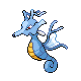
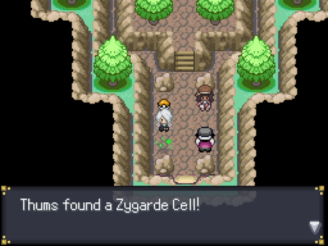
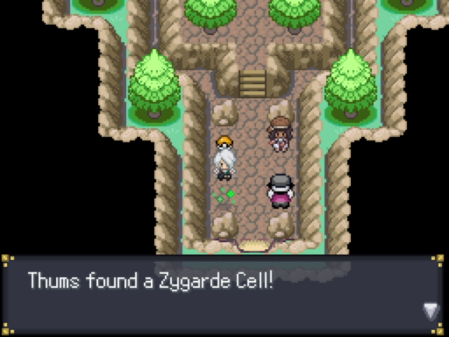
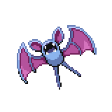
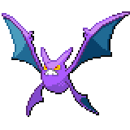

Mirage Woods
Mirage Woods

| Item | Location |
Moomoo Milk |
Along the path, left side |
Pretty Wing |
Along the path, right side |
Zinc |
Along the path, left side |
Ether |
Bottom left of the Kingdra statue |
Green Shard |
Top right of the Kingdra statue |
Repel |
Left side of the entrance to the research area |
Clever Wing |
Near the rock in the bottom left of the research area |
Black Flute |
In a patch of grass near the waterfall in the research area |
Genius Wing |
In the grass, right side of the golden forest area |
Mirage Woods is straightforward path with hidden items along the way. Battles here are fought in the Forest Field There are only two trainers here that will battle you, Fragrant Lady Fennel
 and Schoolboy Tommy.
and Schoolboy Tommy. At the end of the path, you'll find a statue of a Kingdra. Make sure you're healed up, and then place the Ancient Wing we found earlier onto the Kingdra. The statue will activate, then challenge you to a battle.
At the end of the path, you'll find a statue of a Kingdra. Make sure you're healed up, and then place the Ancient Wing we found earlier onto the Kingdra. The statue will activate, then challenge you to a battle.
Ancient Kingdra
|

Kingdra, Level 48 |
Water | Surf |
|---|---|---|
| Thunder | ||
| Dragon | Icy Wind | |
| Rain Dance |
The Kingdra is over 10 levels above you at this point, so this can definitely be a difficult battle. The good news is that in the Forest Field, Surf's damage is lowered so it won't hit as hard with its only STAB move. A strategy that generally works is to inflict Paralysis onto it, as that would even out the speed boost it will get with Swift Swim once the rain is up. Thunder will have 100% accuracy once it gets its Rain up, so be careful with that. Even though its level is much higher, this is still effectively a 6v1 so as long as you have the opportunity to chip away at it you should be ok.
Once you beat the Kingdra, you'll be allowed to proceed with the newly created bridge. Enter the first house and you'll find an Itemfinder.
 I would recommend registering the Itemfinder on F5, and so can also trigger it with the Shift key that way. One of the other houses is blocked, so enter the house on the left side and pick up the Steam Ball, then talk to the scientist in the top right corner. He'll ask for your help with a research project, and then you'll have access to the last house. From the middle building, head upstairs, outside, then into the cave.
I would recommend registering the Itemfinder on F5, and so can also trigger it with the Shift key that way. One of the other houses is blocked, so enter the house on the left side and pick up the Steam Ball, then talk to the scientist in the top right corner. He'll ask for your help with a research project, and then you'll have access to the last house. From the middle building, head upstairs, outside, then into the cave.
Inside the cave you'll find TM66 Payback
 and a Zygarde Cell. If you walk in deeper, you'll find that you need to figure out a way to disturb the Zubats. We'll need the move Flash, which you can buy at the Chrisola Casino for 1000 Coins. Once you use Flash, the Zubats will wake up and an angry Crobat will attack you.
and a Zygarde Cell. If you walk in deeper, you'll find that you need to figure out a way to disturb the Zubats. We'll need the move Flash, which you can buy at the Chrisola Casino for 1000 Coins. Once you use Flash, the Zubats will wake up and an angry Crobat will attack you.
Pokegang Crobat
|

Zubat, Level 33 |
Poison | Acrobatics |
|---|---|---|
| Air Cutter | ||
| Flying | Swift | |
| Confuse Ray | ||
|
Zubat, Level 33 |
Poison | Acrobatics |
| Air Cutter | ||
| Flying | Swift | |
| Confuse Ray | ||
|
Zubat, Level 33 |
Poison | Acrobatics |
| Air Cutter | ||
| Flying | Swift | |
| Confuse Ray | ||
|
Zubat, Level 33 |
Poison | Acrobatics |
| Air Cutter | ||
| Flying | Swift | |
| Confuse Ray | ||
|

Crobat, Level 48 |
Poison | Acrobatics |
| Poison Fang | ||
| Flying | Toxic | |
| Confuse Ray |
Level-wise, you are at a disadvantage for this battle. That being said, the environment is in your favor. This battle is fought in the Cave, which boosts the power of almost all Rock-type moves while weakening Air Cutter. A high Defense Rock-type or Steel-type Pokemon can take anything any of the Pokemon can throw at it during this battle. If you have any Pokemon with Stealth Rocks, the entry hazard damage is doubled taking 50% all the Zubats and Crobat's HP. Like Kingdra, you can also cripple it with either Paralysis or, since it is a physical attacker, Burn will also work fine. However you choose to defeat it, once you do you'll also optain a Zubat as a reward.
That's everything we can do in Mirage Woods, so we can now head over to East Gearen City to find Venam so she can melt the steel bars Ren put up.